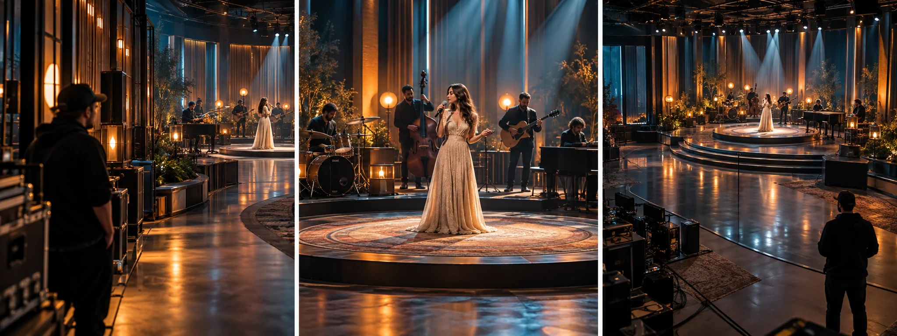

F12 · 고급 · FPV
라이브 음악 큐와 FPV
음악의 강조점과 가수의 동작에 맞추어 진입·관찰·이탈의 시점을 설계하는 법을 익힌다.
그림에서 확인할 세 가지통과 타이밍을 공연 큐에 맞춘다
1무대 옆의 대기
첫 화면은 공연이 진행될 영역과 그 옆 공간을 나누어 보여준다. 카메라가 움직이기 전부터 무대의 주인공과 진입 방향이 읽혀야 한다.
2가수와 밴드의 순간
가운데 화면은 가수의 동작과 뒤의 연주자를 함께 담는다. 시선이 가수에게 모이면서도 공연의 맥락이 남아 있는지 비교한다.
3공연을 남기는 이탈
마지막 화면은 무대에서 관심을 완전히 끊지 않고 거리를 바꾼다. 이동의 끝에도 음악을 수행하는 사람들의 관계가 보이는지 살핀다.
원리를 설명하는 가상 학습 장면
촬영 설계
촬영을 이렇게 설계한다
곡의 사건을 기준으로 삼는다
학습 설계에서는 후렴 시작이나 가수의 돌아섬처럼 화면을 바꿀 이유가 있는 순간을 고른다. 모든 박자에 이동을 붙이기보다 공연의 어느 순간을 강조할지 먼저 정한다.
대기와 진입을 분리한다
카메라가 기다리는 위치와 실제 화면에 사용할 이동 구간을 나눈다. 공연자가 움직이는 영역과 다른 장비의 경로를 함께 확인해 필요한 순간에만 계획된 시점을 얻도록 준비한다.
이탈 뒤 화면을 확보한다
가수 가까이에서 끝나는 움직임만 계획하면 다음 방송 화면으로 넘어갈 여유가 부족할 수 있다. 학습안에서는 이동 뒤 안정된 구도와 이탈 시간을 남겨 다음 카메라로의 인계를 검토한다.
Craig David의 CNN 연말 생방송 공연에서 제작자는 음악·조명·출연 동작에 맞춘 FPV 운용을 설명한다.
원본 영상Craig David CNN NYE
1. 움직일 이유
가수의 동작이나 음악의 변화가 카메라 이동을 부르는지 본다. 움직임 자체가 주목받으면 공연의 강조점이 바뀔 수 있다.
2. 가수와 배경의 관계
가수의 크기가 커져도 밴드와 무대 맥락이 남는지 본다. 접근과 공연 이해 사이의 균형이 구도의 판단 기준이다.
3. 이동 뒤의 여유
마지막 시점에서 다음 화면으로 넘길 시간을 떠올린다. 멋진 통과 뒤에도 정리된 구도가 있어야 방송 흐름에 들어갈 수 있다.
재생이 제한되면 원본 영상 새 창을 이용하세요.
제작진 설명 · 한국어 요약 번역
다시 할 수 없는 공연을 반복 가능한 경로로 준비하다
공연의 큐
번역 요약: Whyld는 2022년 12월 31일 Twickenham Film Studios의 CNN 새해 전야 생방송 촬영을 설명한다.
가수, 음악, 조명, 방송 큐에 맞춰 각 비행의 타이밍을 정했다.
출연자와 스태프, 방송 장비와 안전한 간격을 유지하도록 경로를 짰다.
사전 점검
신호 세기, 조종 위치, 배터리 여유, 제작팀 조율을 미리 따졌다.
방송이 시작되면 멈추거나 같은 동작을 반복할 여유가 거의 없었다고 한다.
그래서 반복 가능한 경로가 핵심 과제였다.
영상 출처
해당 공연은 공식 Instagram 영상으로 연결된다.
Kling 프롬프트단문 인과 체인 · 16:9
내가 직접 만들어 본다
음악의 사건(후렴, 돌아섬)이 원인이 되어 대기 중인 드론이 진입하고, 이탈 뒤에도 공연의 관계가 남게 한다.
한계 · 실제 큐 시트와 방송팀의 신호 타이밍은 영상만으로 검증할 수 없다.
- S01영상은 하나의 연속 쇼트다.
- S02야외 무대에서 가수와 밴드가 공연한다.
- S03처음 10초 동안, 드론은 무대 옆에서 조용히 기다린다.
- S04가수는 첫 소절을 기다리며 서 있다.
- S05후렴이 시작되자 가수가 관객 쪽으로 돌아선다.
- S06다음 10초 동안, 드론은 그 돌아섬을 신호로 무대에 들어간다.
- S07드론이 들어가기 때문에 가수 뒤의 밴드가 함께 보인다.
- S08시선은 가수에게 모이고 밴드는 맥락으로 남는다.
- S09마지막 10초 동안, 노래가 잦아들자 드론이 뒤로 물러난다.
- S10드론이 물러나도 가수와 밴드의 관계는 화면에 남는다.
- S11그 결과 무대 전체가 다시 한눈에 들어온다.
- S12드론은 안정된 구도에서 쇼트를 마친다.
[네거티브]
- 컷이나 다른 장면이 중간에 끼어드는 것 금지
- 야외 무대 대신 전혀 다른 장소가 나오는 것 금지
- 드론이 대기하지 않고 처음부터 무대 위를 도는 것 금지
- 가수가 기다리지 않고 이미 격하게 움직이는 것 금지
- 후렴이 시작돼도 가수가 정면만 바라보는 것 금지
- 드론이 돌아섬과 무관한 시점에 들어가는 것 금지
- 밴드가 가려져 가수만 덩그러니 보이는 것 금지
- 시선이 밴드로 분산되어 가수가 묻히는 것 금지
- 드론이 노래 도중에 갑자기 후퇴하는 것 금지
- 물러나며 밴드가 프레임 밖으로 사라지는 것 금지
- 무대가 보이지 않을 만큼 멀리 날아가는 것 금지
- 구도가 흔들린 채 쇼트가 끊기듯 끝나는 것 금지
결과에서 볼 것
- 드론이 후렴과 돌아섬 뒤에 들어갔는가
- 진입 중에도 가수와 밴드가 함께 보였는가
- 이탈 뒤에도 공연의 관계가 남았는가
프롬프트 설계안이다. Kling에서 실제로 생성해 보기 전에는 결과를 보장하지 않는다. 길이와 모드는 Kling 화면에서 확인해 고른다. 이미지에서 영상으로 만들 때는 첫 프레임 이미지를 실제 입력으로 넣는다.